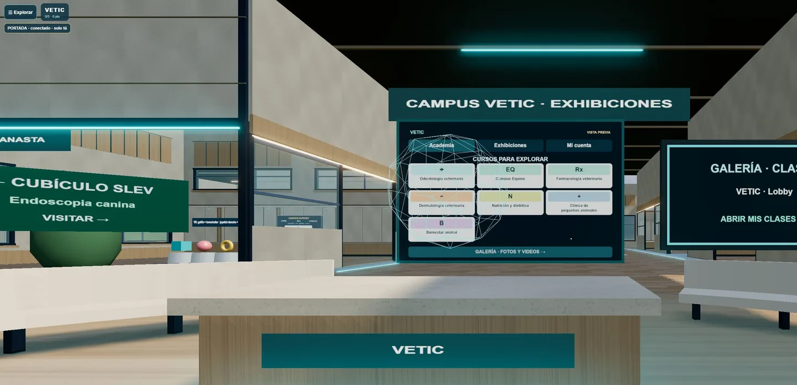
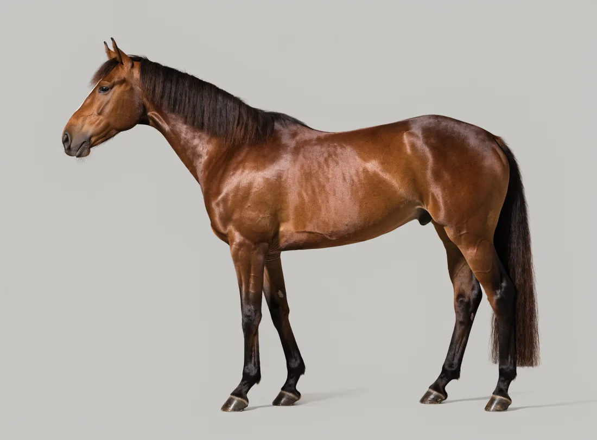

Aprende con tus clases
Encuentra los vídeos de tu área en la galería. Tu cuenta reúne los accesos que te habilite el equipo académico.
MEDICINA VETERINARIA INTEGRAL
Formación veterinaria que conecta el conocimiento con la práctica. Aprende con clases, explora modelos 3D y participa en experiencias educativas en nuestro campus virtual.
Desde tu navegador.
PC, celular y Meta Quest.

Vista real del campusEntra. Explora.
Aprende.
EDUCACIÓN VETERINARIA EN MOVIMIENTO
ClasesSimulacionesAprendizaje interactivoENCUENTRA TU SIGUIENTE PASO
Cada área tiene su propio espacio.
Entra a tu sala, explora sus actividades y accede a las clases que tengas asignadas.

01SALA DE APRENDIZAJEAnatomía, manejo y retos veterinarios.
El conocimiento se pone en práctica.
Un entorno clínico para explorar
y aprender de forma interactiva.
Examina moléculas 3D y aprende con cinco juegos:
ADME, receptores, botiquín, clasificación y escáner.
Las salas y las clases requieren iniciar sesión con Google y tener el acceso asignado.
OTRA FORMA DE ESTAR PRESENTE
Un espacio que une formación, exploración y comunidad veterinaria. Entra por curiosidad. Quédate por lo que puedes descubrir.
Explorar el lobbyEncuentra los vídeos de tu área en la galería. Tu cuenta reúne los accesos que te habilite el equipo académico.
Explora modelos 3D, reconoce estructuras y participa en juegos y simulaciones educativas.
Descubre los cubículos, las marcas y los productos del lobby. Comparte el recorrido con otras personas.
TU CAMPUS, A TU MANERA
Explora con teclado y ratón. Abre tus clases en un navegador compatible.
Tu espacio de aprendizaje a mano, con controles táctiles para recorrerlo.
Experimenta el campus en WebVR. Las clases protegidas se ven fuera del modo inmersivo.
SOMOS VETIC
Conoce nuestros programas, novedades y encuentros para profesionales de la medicina veterinaria.
ANTES DE ENTRAR
Puedes explorar el lobby como invitado indicando tu nombre y correo. Para entrar a las salas de formación y a sus clases necesitas iniciar sesión con Google y tener los permisos asignados.
Inicia sesión con el correo que autorizó el equipo académico. Entra a tu sala y abre «Galería y mis cursos» desde el menú. Cada clase tiene su propia asignación de acceso.
El campus tiene controles para PC, celular y Meta Quest con WebXR. Para las clases protegidas utiliza un navegador compatible, como Google Chrome actualizado. En Meta Quest abre las clases fuera del modo VR inmersivo; la reproducción depende de la compatibilidad del dispositivo.
Visita nuestro Instagram o consulta los programas e inscripciones. El acceso al campus no asigna automáticamente una sala o un curso.